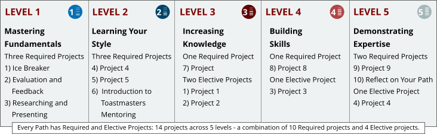

|
|
|
|
|||
| LEVELS: Each Path is made up of five levels of increasing complexity. These 5 levels are represented by a special icon, which you will see on the website, in literature, and they will also show up as Digital Badges as you complete a level. The program is designed this way so you’re always building on what you learned in the previous level. All learning paths contain the following levels. | |||
|  | |||
| After you receive your assessment results, you can embark on the Path recommended to you or choose one of the other nine paths available. No matter which Path you choose, you will complete at least 14 educational projects and present a minimum of 15 prepared speeches. You will also serve in various meeting roles. Each Path is divided into five levels that build in complexity. The levels help you build on and apply what you have learned. | |||
|